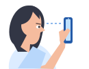
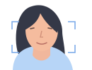

1Prepara
2Graba
3Revisa
Preparemos tu captura
Luz frente a ti
Evita ventanas detrás.
Teléfono estable
Apóyalo a la altura de tus ojos.
Sigue la guía
Un giro pequeño a cada lado y vuelve al centro.
La cámara se activa al continuar
El análisis se está iniciando. Intenta en unos momentos.
Mira al frente
Comprobando luz…Encendiendo tu cámara…
Imita esta posición
1Frente2Giro 13Giro 24Centro
0 / 20 s
Vamos a preparar la toma
1Prepara
2Graba
3Revisa
Revisando tu captura
Estamos analizando la señal de tu rostro.
Puede tardar unos minutos.
1Prepara
2Graba
3Revisa
Mejoremos la toma
Sigue estos consejos para mejorar la captura.
La luz o el movimiento pueden afectar la señal.
1

Coloca el teléfono a la altura de tus ojos
Así podremos ver mejor tu rostro.
2

Quédate quieto durante la grabación
Evita mover el teléfono y tu rostro.
Qué ocurrió en el análisis
1Prepara
2Graba
3Revisa
Tu escaneo
Una captura, dos formas de analizarla.